Intelligentes Energiemanagement für dein Zuhause
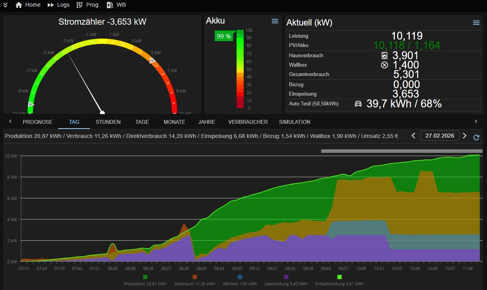
Fünf Säulen für dein intelligentes Energiemanagement
ML-basierte Erzeugungsprognosen und intelligente Lade-Algorithmen für maximalen Eigenverbrauch.
OCPP 1.6 & 2.0 kompatibel. Sonne- und Prognose-Lademodi für optimales Laden.
Automatische Lade- und Entladesteuerung mit intelligenten Regeln für Marstek und weitere Speichersysteme.
BMW, Hyundai & Tesla Integration mit Kalenderplanung für optimale Ladezeiten.
Shelly-Geräte einbinden: Verbrauch einzelner Geräte messen und Verbraucher gezielt schalten.
Maximaler Eigenverbrauch, minimaler Netzbezug — vollautomatisch
Fünf verschiedene Lademodi passen sich an jede Situation an. Im Sonne-Modus wird die Ladeleistung in Echtzeit an die PV-Produktion angepasst — mit Reserve für den Hausverbrauch.
Der Prognose-Modus berechnet anhand von Wettervorhersagen und dem aktuellen Ladestand, wie schnell geladen werden muss, damit das Auto pünktlich zur Abfahrt voll ist — ohne unnötigen Netzbezug.
Im Autokalender hinterlegst du, wann das Auto gebraucht wird. Der Solarmanager berechnet automatisch, wann und wie schnell geladen werden muss — bei einem variablen Stromtarif wird versucht, zur günstigsten Uhrzeit zu laden.
Optional kann ein Ladelimit pro Termin gesetzt werden: Das Auto muss z.B. nur auf 80% geladen sein, nicht auf 100%.
Der Hausakku wird automatisch gesteuert: Reicht die PV-Prognose für den restlichen Tag, wird der Akku erst später geladen — damit morgens mehr Strom fürs Auto oder den Haushalt verfügbar ist.
Abends berechnet der Solarmanager, ob der Akku bis zum nächsten Morgen reicht und passt die Entladeleistung entsprechend an — für möglichst wenig Netzbezug über Nacht.
Der Solarmanager berechnet eine eigene PV-Ertragsprognose anhand aktueller Wettermodelle — abgestimmt auf deine Anlage, Ausrichtung und Standort. Per Machine Learning wird die Prognose mit jeder Woche genauer. So weiß das System schon morgens, wieviel Strom über den Tag kommt, und verteilt die Energie optimal auf Auto, Akku und Haushalt.
Wann ist das Auto voll? Die integrierte Simulation berechnet anhand der aktuellen Wetterprognose und des Ladestands, wie lange die Ladung noch dauert. So kannst du spontane Fahrten besser planen und siehst auf einen Blick, ob das Auto rechtzeitig geladen ist.
Der Solarmanager läuft komplett auf deinem eigenen Raspberry Pi oder Server. Keine Cloud, kein Abo, keine Abhängigkeit von externen Diensten. Deine Energiedaten verlassen nie dein Netzwerk.
Bei dynamischen Stromtarifen (z.B. Tibber, aWATTar) wird automatisch dann aus dem Netz geladen, wenn der Strom am günstigsten ist — kombiniert mit der PV-Prognose für maximale Ersparnis.
Übersichtliches Interface für volle Kontrolle über dein Energiesystem
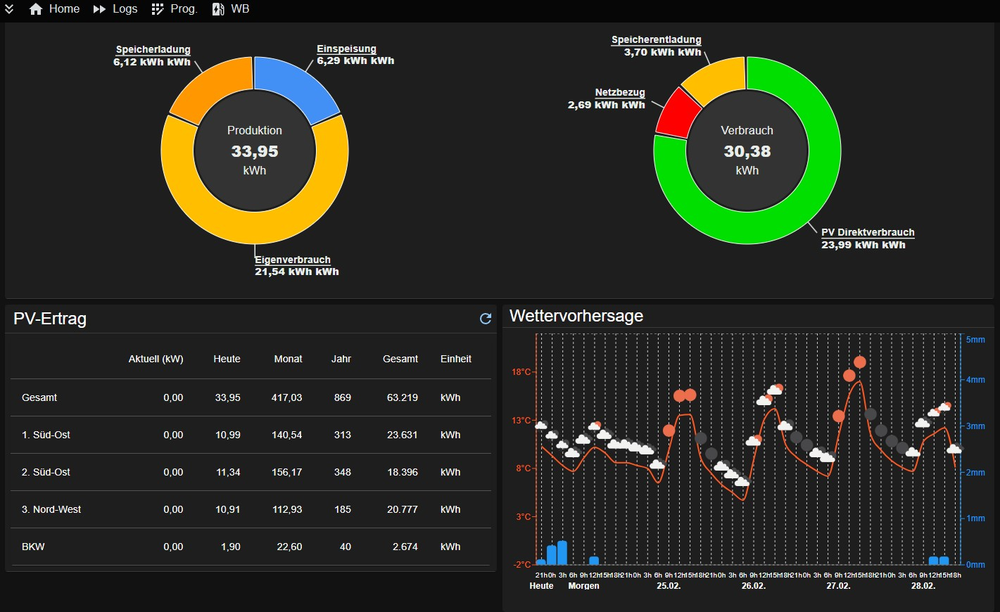
Live-Übersicht mit PV-Produktion, aktuellem Verbrauch, Akku-Status und Wettervorhersage. Alles auf einen Blick — optimiert für Desktop und Mobile.
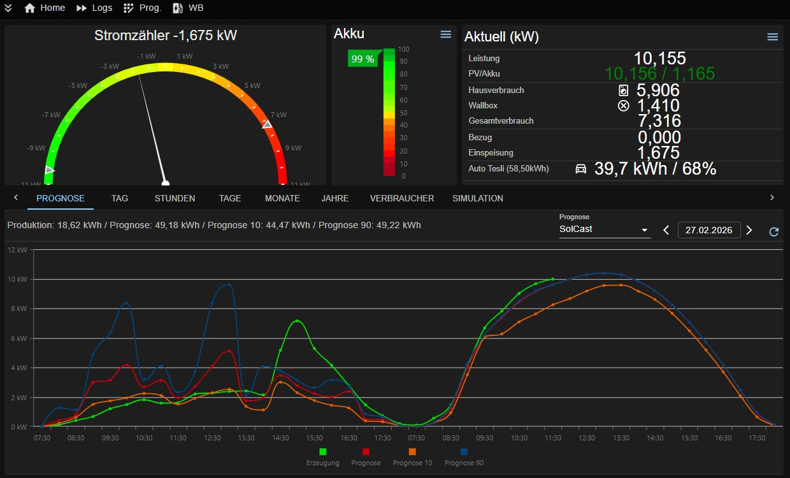
Eigene Ertragsprognose auf Basis aktueller Wettermodelle — abgestimmt auf deine Anlage. Vergleich von tatsächlicher Erzeugung mit der Vorhersage in Echtzeit.
Echtzeit-Leistungskurven mit Produktion, Verbrauch, Wallbox und Akku. Detaillierte Graphen zeigen den Energiefluss über den gesamten Tag.
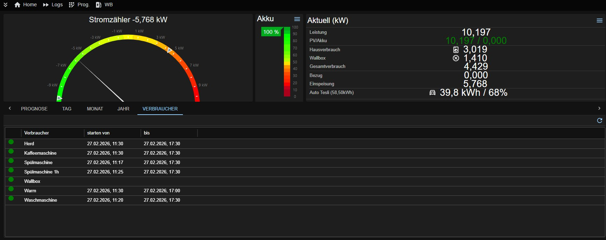
Alle Großverbraucher im Blick: Herd, Spülmaschine, Waschmaschine und mehr — mit Laufzeiten und Status auf einen Blick.
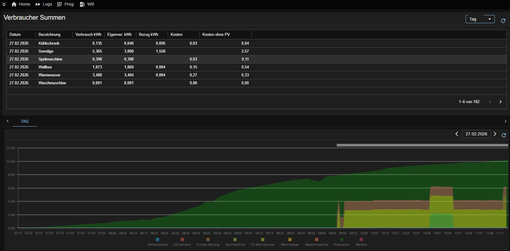
Detaillierte Aufschlüsselung pro Gerät: Verbrauch in kWh, Eigenverbrauchs- und Bezugsanteil, Kosten — mit Tagesgraph zur Visualisierung.
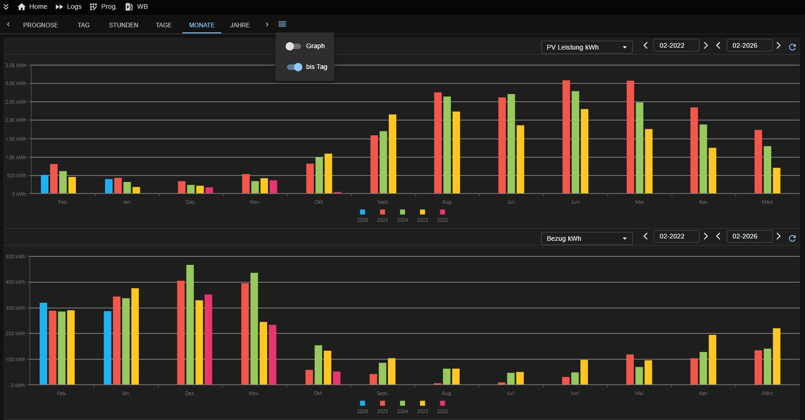
PV-Produktion und Netzbezug über mehrere Jahre vergleichen. Erkenne Trends und optimiere deinen Eigenverbrauch langfristig.
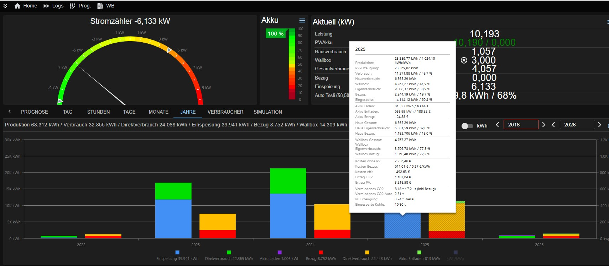
Komplette Jahresstatistik: Produktion, Eigenverbrauch, Kosten, EEG-Ertrag und vermiedenes CO₂ — alles auf einer Seite.
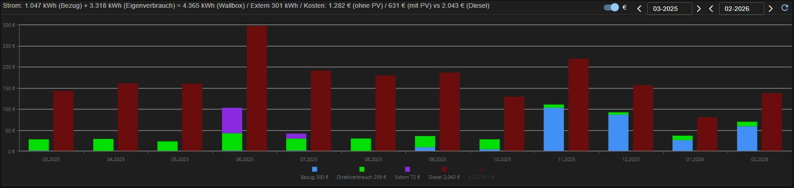
Was kostet das Laden wirklich? Vergleich von Bezugskosten, Direktverbrauch und den eingesparten Dieselkosten pro Monat.
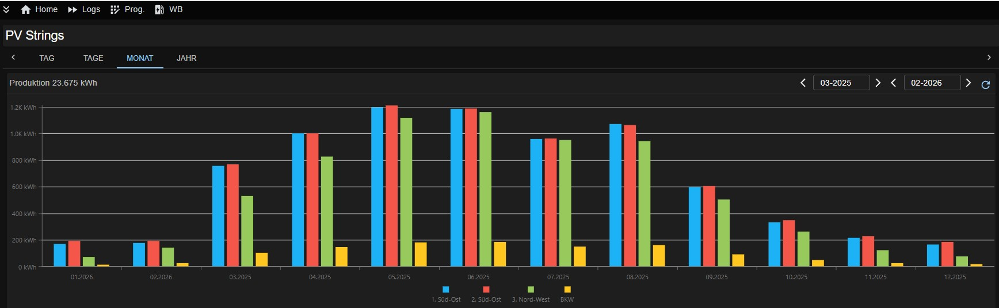
Vergleich einzelner PV-Strings nach Ausrichtung: Süd-Ost, Nord-West, Balkonkraftwerk — als Monats- oder Tagesverlauf.
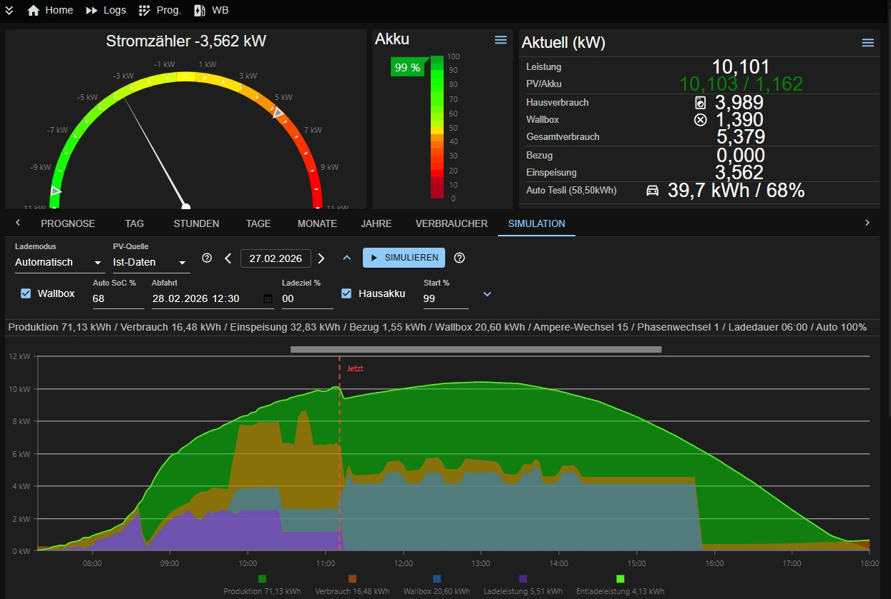
Ladesimulation: Wann ist das Auto voll bei aktuellem Wetter? Plane deine Fahrten mit Echtzeit-Prognosen.
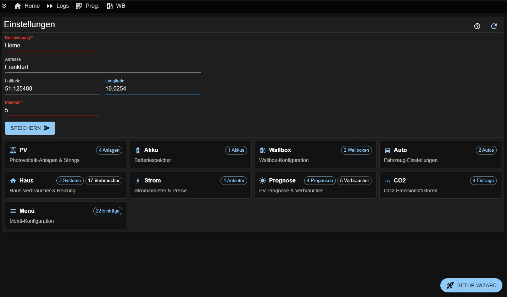
PV-Anlagen, Akkus, Wallboxen, Autos und Prognosen konfigurieren. Flexibel anpassbar an jede Anlagenkonfiguration.
Gebaut für Datenschutz, Flexibilität und Unabhängigkeit
Raspberry Pi
Docker
Kein Cloud-Zwang
Variable Tarife
ML-Prognosen
Mit Docker ist der Solarmanager in wenigen Schritten einsatzbereit.
wget https://raw.githubusercontent.com/BBessler/Solarmanager/main/install/setup_docker.sh
chmod +x setup_docker.sh
./setup_docker.sh